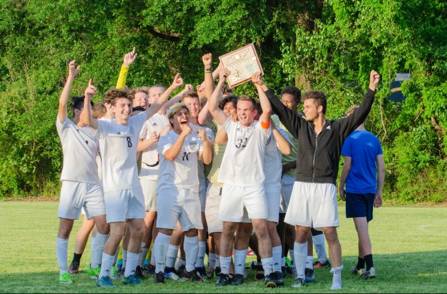
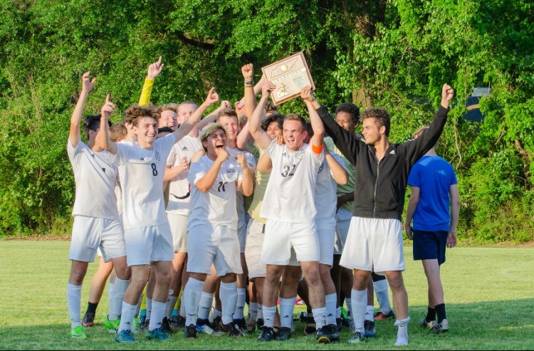
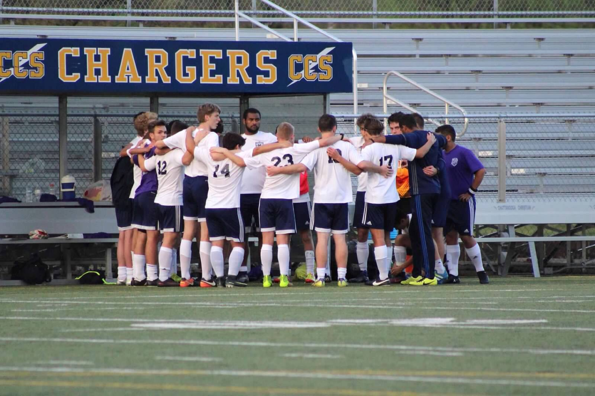
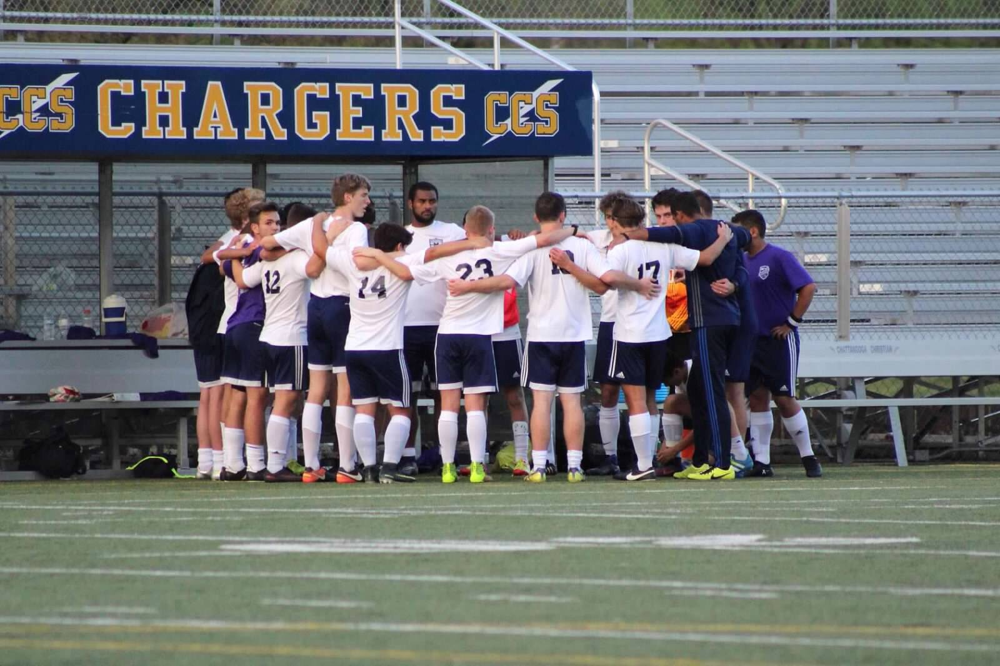

MADISON ACADEMIC SOCCERMADISON ACADEMIC SOCCER
MADISON ACADEMIC SOCCERMADISON ACADEMIC SOCCER

 



.png)
 


Madison went to the Regional Championship full of confidence as they played rivals TCA for the third time this season. Once again the Mustangs came out on top to get a 100% record against TCA this season with a scorline of 2-0 to crown themselves Regional Champions.
The Madison Mustnags defeat rivals TCA for the second time this season to win the District Championship by a score of 2-0.
Benito Rodriguez is a Senior at Madison and will be playing his 4th and final season with the Mustangs. Benito was asked about what his goals for the season were as well as what he loved most about the team and this was his response. "I have high expectations for our team so my goals for the season are to make a State Tournament appearance since nobody in the team has gone. Not only do I want to make a State appearance but I want us to win the tournament. What I love most about the team is the support everyone gets and how much of a family it has been to me as well as all the banter."
Joseph Soriano is a Senior at Madison who has played every year of his high school career. Joseph was asked what his goals for the upcoming 2018/2019 season as well as what he loved the most about the team and this was his response. "My goal for the season is to make our first state appearance in 3 years. What I love most about the team is how close everyone is and noo matter how hard the workout is, we just do it!"
Matthew Steen is a Senior at Madison and he has played for the Mustangs since his freshman year. This is what he had to say when asked about what he loved most about the team as well as his expectations and goals for the upcoming 2018/2019 season. "My goal this year is for us to go to state. Once we reach that goal, we should transition into the goal of winning state. I love how close our team is. Everyone is friends with everyone. We are a close-knit team. This will be my fourth year playing and I can't wait to finish my senior year strong!"
Cameron Huelin is a Senior at Madison and he has played for the Mustangs since his freshman year. This is what he had to say when asked about what he loved most about the team as well as his expectations and goals for the upcoming season. "I expect to make it far in the state tournament. I've played all 4 years. I love the comradery that goes along with the sport and specifically this team."
Bolaji Olasunya is a Senior at Madison and will be playing his final year of soccer after 3 years of playing for the Mustangs. This is what he said about his goals for the season and what he loved most about the team. "I expect to play at state and hopefully score 6 goals. I've played for this team for 3 years and I love our energy."